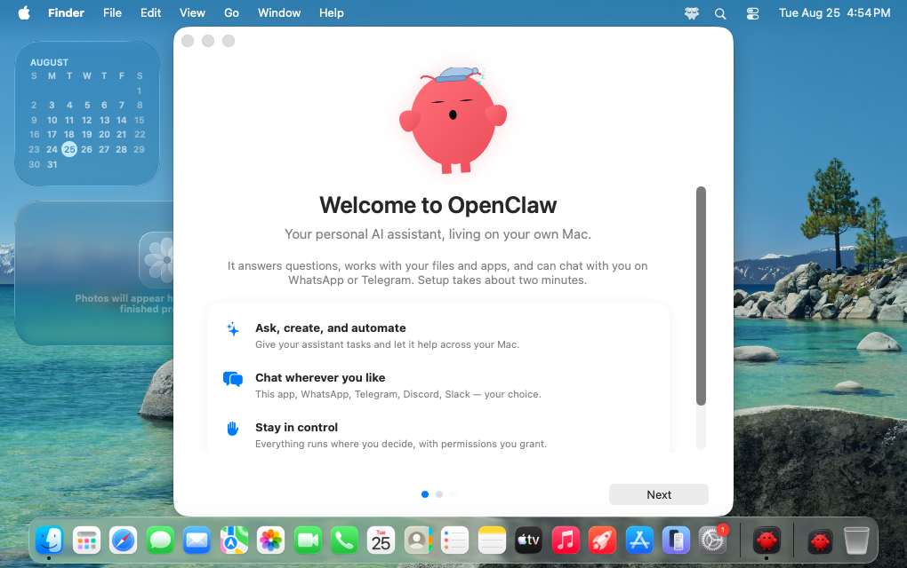

二、国内外研究现状
□ 通用数字智能体方法：四类研究路线
纯 CLI 能力方法
Terminal-Bench · SWE-agent · OpenClaw
优点 动作精确高效，状态可直接读取；单元测试即可验证，强化学习已规模化
不足 看不见渲染结果；仅覆盖具备命令行或 API 的软件
纯 GUI 能力方法
OSWorld · UI-TARS-2 · FastV · SnapKV

优点 截图 + 键鼠为通用接口，可操作任意软件；OSWorld 两年由 12% 升至 80%+
不足 截图累积致开销高、步数多；通用压缩未利用 GUI 结构；缺天然 verifier
混合能力方法
CoAct-1 · OSWorld-MCP · GUI-Genesis

优点 混合动作空间缩短轨迹；以参考应用为 oracle 构建可验证环境
不足 第二能力多为辅助（+3–5 pp），仅依据结果判分；可验证环境局限于单一界面
走向真实世界
dots · Muse · OpenClaw · SimWorlds · RobotWorld

优点 个人智能体具备记忆与跨应用执行；Coding Agent 已能生成物理仿真与机器人程序
不足 多在云端通用环境执行，职业特质不鲜明；以"看起来对"为准，缺跨条件物理验证
共同缺口：缺少统一范式与过程可信的评测、可验证的混合训练环境，以及面向真实世界的落地验证